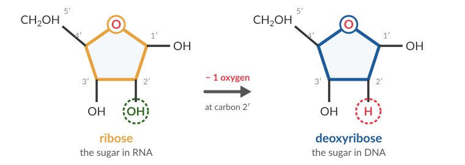
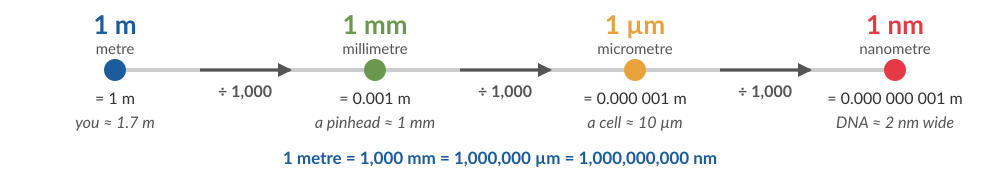

Understanding DNA
Session 3 — Scientific English
Warm-up: Review of Session 2 — Live Quiz
Scan the QR code to join the live quiz on the Scientific Method (10 questions).
What Does “DNA” Stand For?


The Building Block: the Nucleotide

DNA is a polymer: a long chain of millions of nucleotides.
Vocabulary: polymer — a large molecule made of many repeated units (poly = many, mer = part).
Four Bases, Two Families

How Small Is DNA?


The helix is only 2 nm wide, but the DNA in one cell, unwound, is about 2 m long!
Packing DNA: Chromosomes

- DNA is wound around proteins called histones, like thread on a spool
- It is then coiled again and again into chromosomes
- Humans have 46 chromosomes (23 pairs): one set from each parent
Where Is DNA Found?

- Mostly in the nucleus
- A little in the mitochondria
- In plants, also in the chloroplasts
- Bacteria have no nucleus: their DNA floats in the cell
What Is a Gene?

A gene is a stretch of DNA with the instructions to make one product, usually a protein.
Mutations: Changes to the Code

A mutation is a change in the DNA sequence. Its effect can be harmful, neutral or beneficial.
Every Person Is Unique

0.1 % of 3 billion = 3 million differences between you and the person next to you.
Background: What Was Known
- 1944: DNA is shown to carry genetic information
- 1950: Erwin Chargaff measures the four bases in many species
- Nobody knows the shape of the molecule